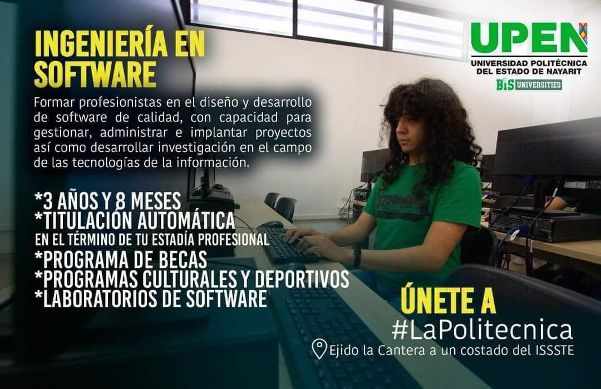

.png)
¿Por qué estudiar en la UPEN? Termina tu carrera en tan sólo 3 años y 8 meses, egresa con nivel C1 de inglés, titulación automática.
...
...
Modelo BIS
Las Universidades Tecnológicas y Politécnicas BIS, representan una modalidad vanguardista en el ámbito de la educación superior, que opera bajo un esquema pedagógico bilingüe, desde el cual se forman profesionales técnicos en áreas clave del sector productivo con habilidades para comunicarse en dos idiomas y desempeñarse, a partir de ello, en espacios profesionales de carácter nacional e internacional.
La internacionalización permite mantener vigentes los programas educativos, dada la actualización que sufren debido a las demandas globales que se identifican, y en los procesos de formación que viven los estudiantes y docentes en su vinculación hacia el extranjero. Esto es posible una formación multi e intercultural, de intercambio no sólo de conocimiento científico, sino ideológico y de tradiciones. Particularmente la modalidad BIS, permite el intercambio de conocimientos sobre bilingüismo, herramientas pedagógicas y experiencias que orientan las acciones universales para garantizar el dominio del idioma extranjero por parte de los estudiantes.
La necesidad de una educación para el desarrollo sustentable, constituye un reto central para las universidades, debido a que son muchos los elementos o factores que inciden. Además, requiere transformaciones profundas, como la superación de las barreras entre las diferentes disciplinas, para permitir que se haga realidad un aprendizaje transformativo; una reforma profunda de los planes de estudio y la revisión curricular de sus contenidos, incorporando los grandes problemas globales, humandas y la calidad de vida, justicia social, equidad de género, respeto a las minorías, aceptación de los grupos étnicos, democracia, transparencia y gobernabilidad, entre otros, para aspirar hacia un estado de sustentabilidad.
...
INGENIERIA SOFTWARE

Formar profesionistas en el diseño y desarrollo de software de calidad, con capacidad para gestionar, administrar e implantar proyectos así como desarrollar investigación en el campo de las tecnologías de la información
- • Empresas micro, medianas y grandes, dedicadas al desarrollo de software.
- • Organizaciones públicas y privadas dedicadas al desarrollo de software
- • Empresas privadas que se dedican a la comercialización de servicios de desarrollo Software.
- • Organizaciones públicas o privadas que realizan estudios y pruebas de Software.
- • Organizaciones públicas o privadas de desarrollo e investigación de nuevos productos y servicios de Software.
- • Asesoría, consultoría, diseño, desarrollo y dirección de proyectos y productos de Software a nivel nacional e internacional.
- • Crear su propio negocio
Ingeniería en Agrotecnología
Formar profesionistas con valores que le permita el manejo para el desarrollo sustentable de la producción animal, forestal y acuícola; capaces de fortalecer empresas desde la producción, comercialización y transferencia tecnológica para el suministro de alimento
- • Empresas de producción, conservación y procesamiento de alimento
- • Supervisión de maquinarias agrícolas
- • Empresas de automatización de agricultura.
- • Invernaderos
Licenciatura en Negocios y Administración
Formar profesionistas con capacidad de dirigir, asesorar y ejecutar estrategias gerenciales y de negociación en ámbitos de incertidumbre y de competitividad internacional; aplicando e innovando herramientas administrativas, económicas, financieras y mercadológicas.
- • Corporaciones y empresas del mundo globalizado
- • Empresas del ramo industrial, agropecuario y de servicio
- • Empresas de logística